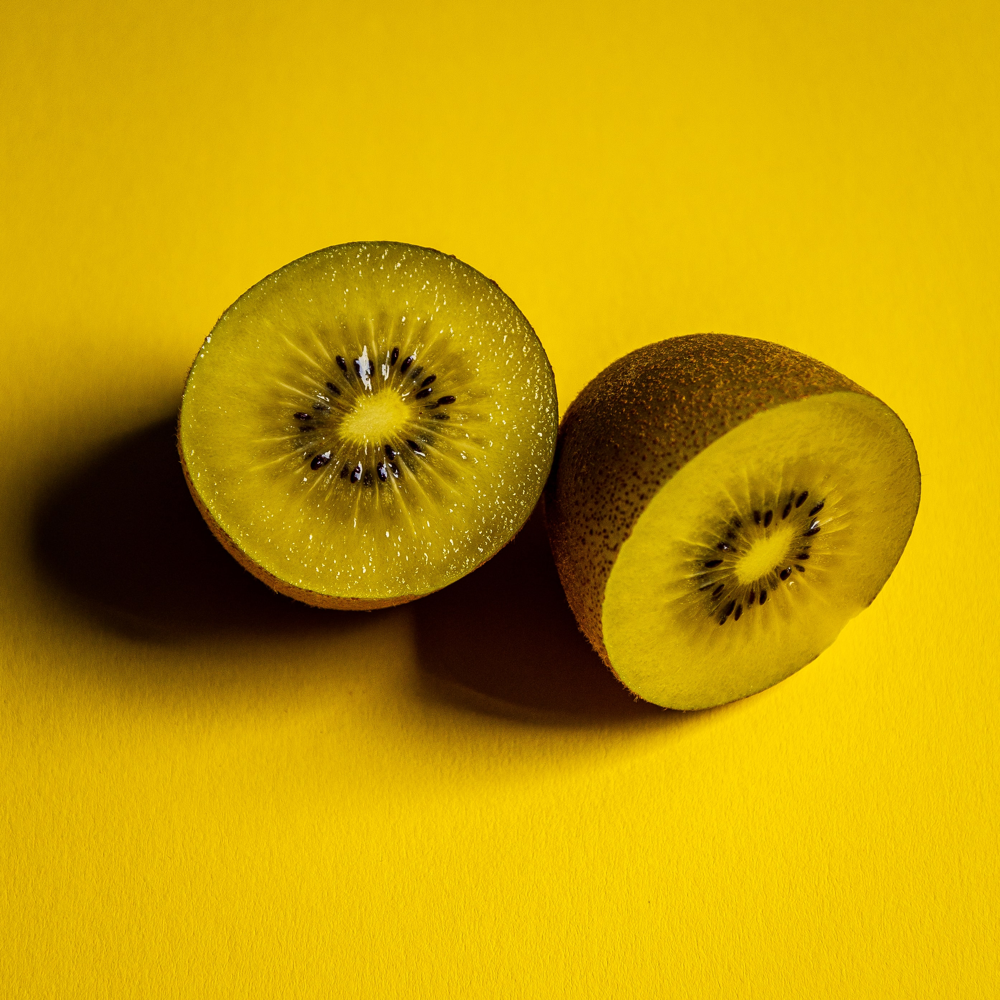
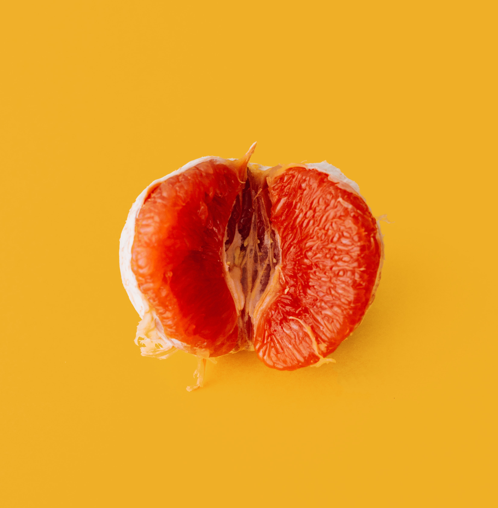

Bananas are a powerful source of potassium and full of resistant starch. They're available year-round in grocery stores.

Kiwis are large berries with edible skin. They're high in Vitamin C, dietary fiber, and antioxidants.

Blood oranges are the best oranges. They have lots of Vitamin C and anthocyanins, a type of antioxidant known for anti-cancer properties.

Watermelons have a variety of nutrients such as lycopene, important for heart health, and citruline, an amino acid linked to immune health.